Capítulo 2 Estimación de densidades
2.1 Histograma
El histograma es una de las estructuras básicas en estadística. Básicamente con este objeto se puede visualizar la distribución de los datos sin tener conocimiento previo de los mismos.
2.1.1 Construcción Estadística
Suponga que \(X_1,X_2, \dots ,X_n\) proviene de una distribución desconocida.
Seleccione un origen \(x_0\) y divida la linea real en segmentos. \[\begin{equation*} B_j = [x_0 +(j - 1)h,x_0 + jh) \quad j\in \mathbb{Z} \end{equation*}\]
Cuente cuántas observaciones caen en cada segmento. \(n_j\).
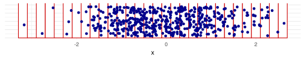 - Cuente la frecuencia por el tamaño de muestra \(n\) y el ancho de banda \(h\). \[\begin{equation*} f_j = \frac{n_j}{nh} \end{equation*}\]
- Dibuje el histograma.
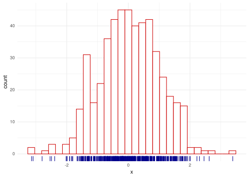
Formalmente el histograma es el
\[\begin{equation*} \hat{f}_h(x) = \frac{1}{nh} \sum_{i = 1}^{n} \sum_{j} I(X_i\in B_j) I(x\in B_j), \end{equation*}\]
donde \(I\) es la indicadora.
2.1.2 Construcción probabilistica
Denote \(m_j=jh-h/2\) el centro del segmento,
\[\begin{align*} \mathbb{P}\left(X\in \left[m_j - \frac{h}{2},m_j + \frac{h}{2} \right)\right) & = \int_{m_j - \frac{h}{2}}^{m_j + \frac{h}{2}} f(u)du \\ & \approx f(m_j)h \end{align*}\]
Esto se puede aproximar como
\[\begin{equation*} \mathbb{P} \left(X\in \left[m_j - \frac{h}{2},m_j + \frac{h}{2}\right) \right) \approx \frac{1}{n} \# \left\{X\in \left[m_j - \frac{h}{2},m_j + \frac{h}{2}\right) \right\} \end{equation*}\]
Acomodando un poco la expresión
\[\begin{equation*} \hat{f}_h(m_j) = \frac{1}{nh} \# \left\{X\in \left[m_j - \frac{h}{2},m_j + \frac{h}{2}\right) \right\} \end{equation*}\]
2.1.3 Propiedades estadísticas
Suponga que \(x_0 = 0\) y que \(x \in B_j\) fijo, entonces
\[\begin{equation*} \hat{f}_h(m_j) = \frac{1}{nh} \sum_{i = 1}^{n} I(X_i \in B_j) \end{equation*}\]
2.1.4 Sesgo
El cálculo del sesgo es el
\[\begin{align*} \mathbb{E}\left[ \hat{f}_h(m_j)\right] & = \frac{1}{nh} \sum_{i = 1}^{n} \mathbb{E}\left[ I(X_i \in B_j)\right] \\ & = \frac{1}{nh} n \mathbb{E}\left[ I(X_i \in B_j)\right] \end{align*}\]
\(I(X_i \in B_j)\) es una indicadora con probabilidad de 1 de \(\int_{(j - 1)h}^{jh} f(u)du\) y 0 sino.
Entonces
\[\begin{align*} \mathbb{E}\left[ I(X_i \in B_j)\right] = \mathbb{P}\left(I(X_i \in B_j)=1\right) = \int_{(j - 1)h}^{jh} f(u)du. \end{align*}\]
Entonces, \[\begin{align*} \mathbb{E}\left[{f}_h(m_j)\right] & = \frac{1}{h} \int_{(j - 1)h}^{jh} f(u)du \end{align*}\]
\[\begin{equation*} Sesgo(\hat{f}_h(m_j)) = \frac{1}{h} \int_{(j - 1)h}^{jh} f(u)du - f(x) \end{equation*}\]
Esto se puede aproximar usando Taylor alrededor del centro \(m_j = jh - h/2\) de \(B_j\) de modo que \(f(u) - f(x) \approx f^{\prime}(m_j)(u - x)\).
\[\begin{equation*} Sesgo(\hat{f}_h(m_j)) = \frac{1}{h} \int_{(j - 1)h}^{jh} f(u) - f(x) du \approx f^\prime(m_j)(m_j - x) \end{equation*}\]
2.1.5 Varianza
Dado que todos los \(X_i\) son i.i.d., entonces
\[\begin{align*} \mathrm{Var}\left( \hat{f}_h(m_j)\right) & = \mathrm{Var}\left( \frac{1}{nh} \sum_{i = 1}^{n} I(X_i \in B_j)\right) \\ & = \frac{1}{n^2h^2} n\mathrm{Var}\left( I(X_i \in B_j)\right) \end{align*}\]
La variable \(I\) es una bernoulli con parametro \(\int_{(j - 1)h}^{h} f(u)du\) por lo tanto su varianza es el
\[\begin{equation*} \mathrm{Var}\left( \hat{f}_h(x)\right)\, = \frac{1}{nh^2} \left(\int_{(j - 1)h}^{h} f(u)du \right)\left( 1 -\int_{(j - 1)h}^{h} f(u)du \right) \end{equation*}\]
2.1.6 Error cuadrático medio
El error cuadrático medio del histograma es el
\[\begin{equation*} \mathrm{MSE}\left( \hat{f}_h(x)\right) = \mathrm{E}\left[\left(\hat{f}_h(x) - f(x)\right)^2\right] = \mathrm{Sesgo}^2\left( \hat{f}_h(x)\right) + \mathrm{Var}\left( \hat{f}_h(x)\right). \end{equation*}\]
Retomando los términos anteriores se tiene que
\[\begin{multline*} \mathrm{MSE}\left( \hat{f}_h(x)\right) = \frac{1}{nh} f(x) + f^\prime \left\{ \left( j - \frac{1}{2} \right) h \right\}^2 \left\{ \left( j - \frac{1}{2} \right) h - x \right\}^2 \\ + o\left(h \right) + o\left(\frac{1}{nh} \right) \end{multline*}\]
Nota: Si \(h \to 0\) y \(nh \to \infty\) entonces \(\mathrm{MSE}\left( \hat{f}_h(x)\right) \to 0\). Es decir, conforme usamos más observaciones, pero el ancho de banda de banda no decrece tan rápida, entonces el error cuadrático medio converge a 0.
Esto indica que si \(\mathrm{MSE}\left( \hat{f}_h(x)\right) \to 0\) (convergencia en \(\mathbb{L}^2\)) implica que \(\hat{f}_h(x) \stackrel{\mathcal{P}}{\to} f(x)\), por lo tanto \(\hat{f}_h\) es consistente.La fórmula anterior tiene la siguiente particularidad
- Si \(h\to 0\), la varianza crece (converge a \(\infty\)) y el sesgo decrece (converge a \(f^\prime (0)x^2\)).
- Si \(h\to \infty\), la varianza decrece (hacia 0) y el sesgo crece (hacia \(\infty\))
Note que la figura siguiente tiene esa propiedad.
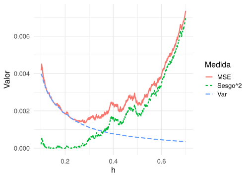
2.1.7 Error cuadrático medio integrado
El problema con el \(\mathrm{MSE}\left( \hat{f}_h(x)\right)\) es que depende completamente del punto escogido \(x\).
La solución a esto es integrar el MSE.
\[\begin{align*} \mathrm{MISE}\left( \hat{f}_h(x)\right) & = \mathrm{E}\left[ \int_{ -\infty}^{\infty} \left\{ \hat{f}_h(x) - f(x) \right\}^2 dx \right] \\ & = \int_{ -\infty}^{\infty} \mathrm{E}\left[ \left\{ \hat{f}_h(x) - f(x) \right\}^2 \right] dx \\ & = \int_{ -\infty}^{\infty}\mathrm{MSE}(\hat{f}_h(x)) \, dx \end{align*}\]
Además,
\[\begin{align*} \mathrm{MISE} (\hat{f}_h(x)) & = \int_{ -\infty}^{\infty} \frac{1}{nh} f(x)dx \\ & + \int_{ -\infty}^{\infty}\, \sum_{j}^{} I(x\in B_j) \left\{ \left( j- \frac{1}{2} \right)h -x \right\}^2 \left [f^\prime \left( \left\{j - \frac{1}{2}\right\}h \right) \right]^2 dx \\ & = \frac{1}{nh} + \sum_{j}^{} \left [f^\prime \left( \left\{j - \frac{1}{2}\right\}h \right) \right]^2 \int_{ B_j} \left\{ \left( j- \frac{1}{2} \right)h -x \right\}^2 dx \\ & =\frac{1}{nh} + \frac{h^2}{12} \sum_{j} \left [f^\prime \left( \left\{j - \frac{1}{2}\right\}h \right) \right]^2 \\ & \approx \frac{1}{nh} + \frac{h^2}{12} \int \{f^\prime(x)\}^2 dx \\ & =\frac{1}{nh} + \frac{h^2}{12} \Vert f^\prime\Vert_{2}^2 \end{align*}\]
2.1.8 Ancho de banda óptimo para el histograma
El MISE tiene el mismo comportamiento que el MSE. La figura siguiente presenta el comportamiento de la varianza, sesgo y MISE para nuestro ejemplo.
La mala elección del parámetro \(h\) causa que el histograma no capture toda la estructura de los datos.
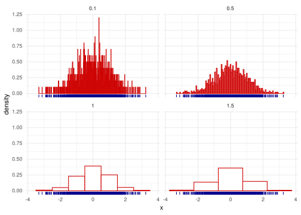
En este caso se puede simplemente minimizar el MISE de la forma usual,
\[\begin{equation*} \frac{\partial \mathrm{MISE}(f_{h})}{\partial h} = -\frac{1}{nh^2} + \frac{1}{6} h \Vert f^\prime\Vert_{2}^2 = 0 \end{equation*}\]
implica que
\[\begin{equation*} h_{opt} = \left(\frac{6}{n\Vert f^\prime\Vert_{2}^2}\right) ^{1/3} = O\left( n^{1/3} \right). \end{equation*}\]
y que por lo tanto
\[\begin{equation*} \mathrm{MISE}(\hat{f}_{h}) = \frac{1}{n} \left(\frac{n\Vert f^\prime\Vert_{2}^2}{6}\right) ^{1/3} \end{equation*}\]
Nota (Recuerde de Estadística I): Si \(X_1, \ldots, X_2 \sim f_{\theta}\) i.i.d, con \(\mathrm{Var}(X) = \sigma^2\), recuerde que el estimador \(\hat{\theta}\) de \(\theta\) tiene la característica que
\[\begin{equation*} \mathrm{MSE}(\theta) = \mathrm{Var}(\hat{\theta}) + \mathrm{Sesgo}^2(\hat{\theta}) = \frac{\sigma^2}{n} \end{equation*}\]Según la nota anterior la tasas de convergencia del histograma es más lenta que la de un estimador parámetrico considerando la misma cantidad de datos.
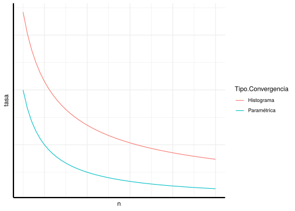
Finalmente, podemos encontrar el valor óptimo de esta datos dado por \(h=\)h_opt_MISE
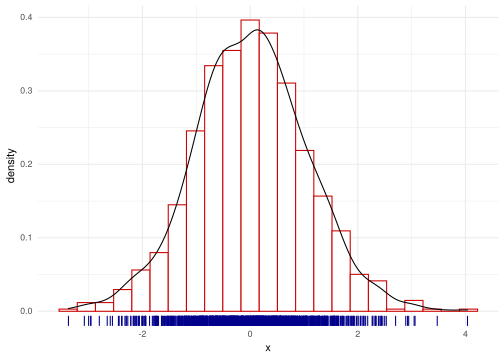
2.2 Estimación No-paramétrica de densidad
2.2.1 Primera construcción
Sea \(X_{1},\ldots,X_{n}\) variables aleatorias i.i.d. con distribución \(f\) en \(\mathbb{R}\).
La distribución de \(f\) es \(F(x)=\int_{-\infty}^{x}f(t)dt\).
Considere la distribución empírica como \[ F_{n}(x)=\frac{1}{n}\sum_{i=1}^{n}I(X_{i}\leq x). \]
Por la ley de los grandes números tenemos que \(\hat{F}_{n}(x) \xrightarrow{c.s} F(x)\) para todo \(x\) en \(\mathbb{R}\)as \(n\rightarrow\infty\). Entonces, \(F_{n}(x)\) es consistente
para todo \(x\) in \(\mathbb{R}\).
La respuesta es si (más o menos).
Suponga que \(h>0\) tenemos la aproximación \[ f(x)\approx\frac{F(x+h)-F(x-h)}{2h}. \]
Remplazando \(F\) por su estimador \(\hat{F}_{n}\), defina \[ \hat{f}_{n}^{R}(x)=\frac{F_{n}(x+h)-F_{n}(x-h)}{2h}, \] donde \(\hat{f}_{n}^{R}(x)\) es el estimador de Rosenblatt .
Podemos rescribirlo de la forma, \[ \hat{f}_{n}^{R}(x)=\frac{1}{2nh}\sum_{i=1}^{n}I(x-h<X_{i}\leq x+h)=\frac{1}{nh}\sum_{i=1}^{n}K_{0}\left(\frac{X_{i}-x}{h}\right) \] con \(K_{0}(u)=\frac{1}{2}I(-1<u\leq1)\), lo cuál es equivalente al caso del histograma.
2.2.2 Otra construcción
Con el histograma construimos una serie de segmentos fijo \(B_{j}\) y contabamos el número de datos que estaban CONTENIDOS en \(B_{j}\)
Suponga que se tienen intervalos de longitud $ 2h $, es decir, intervalos de la forma $ [x-h,x+h) $.
El histograma se escribe como
\[\begin{equation*} \hat{f_{h}}(x) = \dfrac{1}{2hn} \# \{ X_i \in [x-h,x+h) \}. \end{equation*}\]
Ahora tratemos de modificar ligeramente esta expresión notando dos cosas
\[\begin{equation*} \frac{1}{2} I \left( \left\vert u \right\vert \leq 1 \right) \end{equation*}\] con \(u = \frac{x-xi}{h}\)
\[\begin{equation*} \frac{1}{2}\# \{ X_i \in [x-h,x+h) \} =\sum_{i=1}^{n} K\left( \frac{x-x_{i}}{h} \right) =\sum_{i=1}^{n} \frac{1}{2} I \left( \left\vert \frac{x-x_{i}}{h} \right\vert \leq 1 \right) \end{equation*}\] \end{enumerate}
Finalmente se tiene que
\[\begin{equation*} \hat{f}_{h}\left( x \right) = \frac{1}{nh}\sum_{i=1}^{n} K\left( \frac{x-x_{i}}{h} \right) \end{equation*}\]
Esta función debería cumplir las siguientes características
- \(K(u)\geq 0\).
- \(\int_{-\infty}^{\infty} K(u)du = 1\).
- \(\int_{-\infty}^{\infty} u K(u)du = 0\).
- \(\int_{-\infty}^{\infty} u^{2} K(u)du <\infty\).
Por ejemplo:
- Uniforme: \(\frac{1}{2} I \left( \left\vert u \right\vert \leq 1 \right)\).
- Triangular: \((1-|u|) I \left( \left\vert u \right\vert \leq 1 \right)\).
- Epanechnikov: \(\frac{3}{4} (1-u^{2}) I \left( \left\vert u \right\vert \leq 1 \right)\).
- Gausian: \(\frac{1}{\sqrt{2\pi}} \exp \left( -\frac{1}{2}u^{2} \right)\).
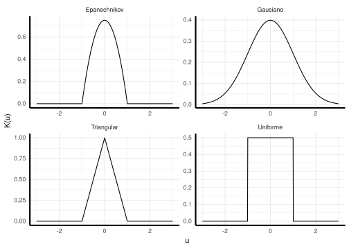
Entonces se tendría que la expresión general para un estimador por núcleos es
\[\begin{equation*} \hat{f}_{h}\left( x \right) = \frac{1}{nh}\sum_{i=1}^{n} K\left( \frac{x-x_{i}}{h} \right) \end{equation*}\]
Nuevamente sería el ancho de banda ya que
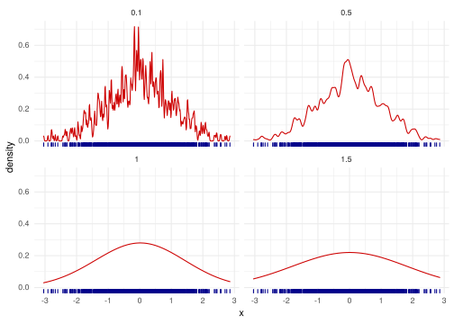
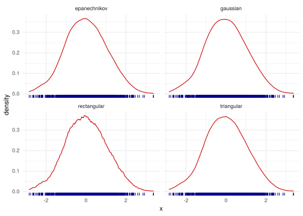
Recordemos nuevamente la fórmula
\[\begin{equation*} \hat{f}_{h}\left( x \right) = \frac{1}{nh}\sum_{i=1}^{n} K\left( \frac{x-X_{i}}{h} \right) \end{equation*}\]
Cada sumando de esta expresión es una función por si misma. Si la integramos se obtiene que
\[\begin{equation*} \frac{1}{nh}\int K\left( \frac{x-X_{i}}{h} \right) dx = \frac{1}{nh} \int K\left( u \right) h du = \frac{1}{n} \int K(u) du = \frac{1}{n} \end{equation*}\]
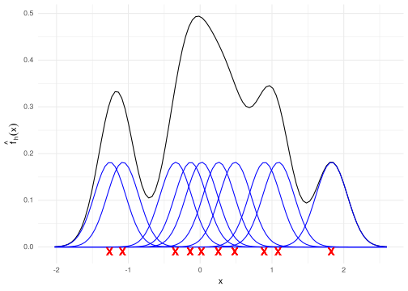
2.3 Propiedades Estadísticas
Si. Las propiedades que vimos anteriormente son universales para estimadores.
Entonces: \[\begin{align*} \mathrm{MSE}(\hat{f}_{h}(x)) & =\mathrm{Var}(\hat{f}_{h}(x))+\mathrm{Sesgo}^{2} (\hat{f}_{h}(x)) \\ \mathrm{MISE}(\hat{f}_{h}) & =\int\mathrm{Var}(\hat{f}_{h}(x))dx+\int\mathrm{Sesgo}^{2}(\hat{f}_{h}(x))dx \end{align*}\]
donde
\(\mathrm{Var}\left(\hat{f}_{h}(x)\right)=\mathbb{E}\left[\hat{f}_{h}(x)-\mathbb{E}\hat{f}_{h}(x)\right]^{2}\) and \(\mathrm{Sesgo}\left(\hat{f}_{h}(x)\right)=\mathbb{E}\left[\hat{f}_{h}(x)\right]-f(x)\).
2.3.1 Varianza
\[\begin{align*} \mathrm{Var}(\hat{f}_{h}(x)) & =\mathrm{Var}\left(\frac{1}{n}\sum_{i=1}^{n}K\left(\frac{x-X_{i}}{h}\right)\right) \\ & =\frac{1}{n^{2}h^{2}}\sum_{i=1}^{n}\mathrm{Var}\left(K\left(\frac{x-X_{i}}{h}\right)\right) \\ & =\frac{1}{nh^{2}}\mathrm{Var}\left(K\left(\frac{x-X}{h}\right)\right) \\ & =\frac{1}{nh^{2}}\left\{ \textcolor{red}{\mathbb{E}\left[K^{2}\left(\frac{x-X}{h}\right)\right]} -\left\{ \textcolor{blue}{\mathbb{E}\left[K\left(\frac{x-X}{h}\right)\right]} \right\}^{2} \right\}. \end{align*}\] Usando que: \[\begin{align*} \textcolor{red}{\mathbb{E}\left[K^{2}\left(\frac{x-X}{h}\right)\right]} & =\int K^{2}\left(\frac{x-s}{h}\right)f(s)ds \\ & =h\int K^{2}\left(u\right)f(uh+x)du \\ & =h\int K^{2}\left(u\right)\left\{ f(x)+o(1)\right\} du \\ & =h\left\{ \Vert K\Vert_{2}^{2}f(x)+o(1)\right\} . \end{align*}\]
\[\begin{align*} \textcolor{blue}{\mathbb{E}\left[K\left(\frac{x-X}{h}\right)\right]} & =\int K\left(\frac{x-s}{h}\right)f(s)ds \\ & = h\int K\left(u\right)f(uh+x)du \\ & =h\int K\left(u\right)\left\{ f(x)+o(1)\right\} du \\ & =h\left\{f(x)+o(1)\right\} . \end{align*}\]
Por lo tanto se obtiene que
\[\begin{equation*} \mathrm{Var}\left(\hat{f}_{h}(x)\right) = \frac{1}{nh} \Vert K\Vert_{2}^{2}f(x) + o\left(\frac{1}{nh}\right), \text{ si } nh\to \infty. \end{equation*}\]
2.3.2 Sesgo
Para el sesgo tenemos
\[\begin{align*} \mathrm{Sesgo}\left(\hat{f}_{h}(x)\right) & = \mathbb{E}\left[\hat{f}_{h}(x)\right]-f(x) \\ & = \frac{1}{nh} \sum_{i=1}^{n} \mathrm{E}\left[K\left( \frac{x-X_{i}}{h} \right)\right] - f(x) \\ & = \frac{1}{h}\mathrm{E}\left[K\left( \frac{x-X_{1}}{h} \right)\right] - f(x) \\ & = \int \frac{1}{h} K\left( \frac{x-u}{h}\right)f(u)du -f(x) \\ \end{align*}\]
Ejercicio 2.3 Usando el cambio de variable \(s=\frac{u-x}{h}\) y las propiedades del kernel pruebe que
\[\begin{equation*} \mathrm{Sesgo}\left(\hat{f}_{h}(x)\right) = \frac{h^{2}}{2} f^{\prime\prime} \mu_{2}(K) + o(h^{2}), \text{ si } h\to 0 \end{equation*}\] donde \(\mu_{2}=\int s^{2}K(s)ds\).
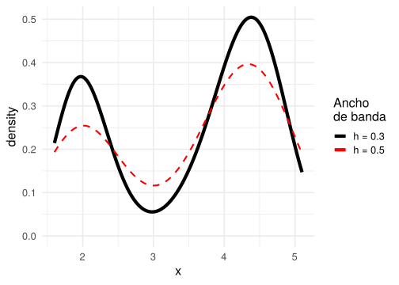
2.3.3 Error cuadrático medio y Error cuadrático medio integrado
El error cuadrático medio se escribe \[\begin{align*} \mathrm{MSE}(\hat{f}_{h}(x)) & = \mathrm{Sesgo}\left(\hat{f}_{h}(x)\right)^{2} + \mathrm{Var}\left(\hat{f}_{h}(x)\right) \\ & = \frac{h^{4}}{4}\left(\mu_{2}(K)f^{\prime\prime}(x)\right)^{2}+\frac{1}{nh}\Vert K\Vert_{2}^{2}f(x)+o(h^{4})+o\left(\frac{1}{nh}\right). \end{align*}\]
Y el error cuadrático medio integrado se escribe como, \[\begin{align*} \mathrm{MISE}\left(\hat{f}_{h}\right) & = \int \mathrm{MSE}\left(\hat{f}_{h}(x)\right)dx \\ & = \int \mathrm{Sesgo}\left(\hat{f}_{h}(x)\right)^{2} + \mathrm{Var}\left(\hat{f}_{h}(x)\right)dx \\ & = \frac{h^{4}}{4}\mu_{2}^{2}(K)\left\Vert f^{\prime\prime}(x)\right\Vert_{2}^{2} +\frac{1}{nh}\Vert K\Vert_{2}^{2}+o(h^{4})+o\left(\frac{1}{nh}\right). \end{align*}\]
2.3.4 Ancho de banda óptimo
Minimizando el \(\mathrm{MISE}\) con respecto a \(h\) obtenemos \[\begin{equation*} h_{opt}=\left(\frac{\Vert K\Vert_{2}^{2}}{\Vert f^{\prime\prime}\Vert_{2}^{2}\left(\mu_{2}(K)\right)^{2}n}\right)^{1/5}=O\left( n^{-1/5} \right). \end{equation*}\]
Nota: De forma práctica, \(h_{opt}\) no es un estimador útil de \(h\) porque depende de \(\Vert f^{\prime\prime}\Vert_{2}^{2}\) que es desconocido.
Más adelante veremos otra forma de encontrar este estimador.Evaluando \(h_{opt}\) en el \(\mathrm{MISE}\) tenemos que
\[\begin{equation*} \mathrm{MISE}(\hat{f}_{h})=\frac{5}{4}\left(\Vert K\Vert_{2}^{2}\right)^{4/5}\left(\Vert f^{\prime\prime}\Vert_{2}^{2}\mu_{2}(K)\right)^{2/5}n^{-4/5} = O\left( n^{-4/5} \right). \end{equation*}\]
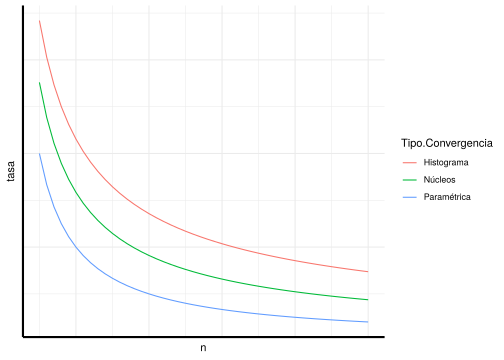
2.4 Escogiendo el ancho de banda
Nota: La principal característica del ancho de banda \[\begin{equation*} h_{opt}=\left(\frac{\Vert K\Vert_{2}^{2}}{\Vert f^{\prime\prime}\Vert_{2}^{2}\left(\mu_{2}(K)\right)^{2}n}\right)^{1/5}=O\left( n^{-1/5} \right). \end{equation*}\]
ES QUE ¡NO FUNCIONA!
Veremos dos métodos para determinar un \(h\) que funcione:
- Referencia normal.
- Validación cruzada.
2.4.1 Referencia normal
Nota: Este método es más efectivo si se conoce que la verdadera distribución es bastante suave, unimodal y simétrica.
Más adelante veremos otro método para densidades más generales.Asuma que \(f\) es normal distribuida y se utiliza un kernel \(K\) gausiano. Entonces se tiene que
\[\begin{align*} \hat{h}_{rn} & =\left(\frac{\Vert K\Vert_{2}^{2}}{\Vert f^{\prime\prime}\Vert_{2}^{2}\left(\mu_{2}(K)\right)^{2}n}\right)^{1/5}=O\left( n^{-1/5} \right) \\ & =1.06 \hat{\sigma} n^{-1/5}. \end{align*}\]
donde
\[\begin{equation*} \hat{\sigma} = \sqrt{\frac{1}{n-1} \sum_{i=1}^{n} \left( x_{i}-\bar{x}^{2} \right)} \end{equation*}\]
Ejemplo 2.1 La varianza empírica de 1, 2, 3, 4, 5, es 2.5.
La varianza empírica de 1, 2, 3, 4, 5, 99, es 1538.El rango intercuantil IQR se define como \[\begin{equation*} \mathrm{IQR}^{X} = Q^{X}_{3} - Q^{X}_{1} \end{equation*}\] donde \(Q^{X}_{1}\) y \(Q^{X}_{3}\) son el primer y tercer de un conjunto de datos \(X_{1},\ldots, X_n\).
Con el supuesto que \(X\sim \mathcal{N}(\mu,\sigma^{2})\) entonces \(\displaystyle Z = \frac{X-\mu}{\sigma} \sim \mathcal{N}(0,1)\).
Entonces, \[\begin{align*} \mathrm{IQR} & = Q^{X}_{3} - Q^{X}_{1} \\ & = \left( \mu+\sigma Q^{Z}_{3} \right) - \left( \mu+\sigma Q^{Z}_{1} \right) \\ & = \sigma \left(Q^{Z}_{3} - Q^{Z}_{1} \right) \\ & \approx \sigma \left( 0.67 - (0.67) \right) \\ & =1.34 \sigma. \end{align*}\]
Por lo tanto \(\displaystyle \hat{\sigma} = \frac{\widehat{\mathrm{IQR}}^{X}}{1.34}\)
Podemos sustituir la varianza empírica de la fórmula inicial y tenemos \[\begin{equation*} \hat{h}_{rn} = 1.06 \frac{\widehat{\mathrm{IQR}}^{X}}{1.34} n^{-\frac{1}{5}} \approx 0.79\ \widehat{\mathrm{IQR}}^{X}\ n^{-\frac{1}{5}} \end{equation*}\]
Combinando ambos estimadores, podemos obtener,
\[\begin{equation*} \hat{h}_{rn} = 1.06 \min \left\{\frac{\widehat{\mathrm{IQR}}^{X}}{1.34}, \hat{\sigma }\right\} n^{-\frac{1}{5}} \end{equation*}\]
2.4.2 Validación Cruzada
Defina el error cuadrático integrado como \[\begin{align*} \mathrm{ISE}(\hat{f}_{h}) & =\int\left(\hat{f}_{h}(x)-f(x)\right)^{2}dx\nonumber \\ & =\int \hat{f}_{h}^{2}(x)dx-2\int \hat{f}_{h}(x)f(x)dx+\int f^{2}(x)dx. \end{align*}\]
Nuestro objetivo es minimizar el ISE con respecto a \(h\).
Primero note que \(\int f^{2}(x)dx\) NO DEPENDE de \(h\). Podemos minimizar la expresión \[\begin{equation*} \mathrm{ISE}(\hat{f}_{h})-\int f^{2}(x)dx= \textcolor{red}{\int\hat{f}_{h}^{2}(x)dx} -2 \textcolor{blue}{\int\hat{f}_{h}(x)f(x)dx} \end{equation*}\]
Vamos a resolver esto en dos pasos partes
Integral \(\textcolor{blue}{\int\hat{f}_{h}(x)f(x)dx}\)
El término \(\textcolor{blue}{\int\hat{f}_{h}(x)f(x)dx}\) es el valor esperado de \(\mathrm{E}\left[\hat{f}(X)\right]\). Su estimador es \[\begin{equation*} \widehat{\mathrm{E}\left[\hat{f}(X)\right]} = \frac{1}{n}\sum_{i=1}^{n}\hat{f}_{h}(X_{i}) =\frac{1}{n^{2}h}\sum_{i=1}^{n}\sum_{j=1}^{n} K\left(\frac{X_{j}-X_{i}}{h}\right). \end{equation*}\]
La solución es remover la \(i^{\text{ésima}}\) observación de \(\hat{f}_{h}\) para cada \(i\).
Redefiniendo el estimador anterior tenemos \(\int \hat{f}_{h}(x)f(x)dx\) como \[ \frac{1}{n}\sum_{i=1}^{n}\hat{f}_{h,-i}(X_{i}), \] donde \[ \hat{f}_{h,-i}(x)=\frac{1}{(n-1)h}\sum_{\substack{j=1\\ j\neq i}}^{n}K\left( \frac{x-X_{i}}{h} \right) . \]
Integral \(\textcolor{red}{\int\hat{f}_{h}^{2}(x)dx}\)
Siguiendo con el término \(\textcolor{red}{\int\hat{f}_{h}^{2}(x)dx}\) note que este se puede reescribir como
\[\begin{align*} \textcolor{red}{\int\hat{f}_{h}^{2}(x)dx} & =\int\left(\frac{1}{nh}\sum_{i=1}^{n}K\left( \frac{x-X_{i}}{h} \right)\right)^{2}dx \\ & =\frac{1}{n^{2}h^{2}}\sum_{i=1}^{n}\sum_{i=1}^{n}\int K\left(\frac{x-X_{i}}{h}\right)K\left(\frac{x-X_{j}}{h}\right)dx \\ & =\frac{1}{n^{2}h}\sum_{i=1}^{n}\sum_{i=1}^{n}\int K\left(u\right)K\left(\frac{X_{i}-X_{j}}{h}-u\right)du \\ & =\frac{1}{n^{2}h}\sum_{i=1}^{n}\sum_{i=1}^{n}K*K\left(\frac{X_{i}-X_{j}}{h}\right). \end{align*}\]
donde \(K*K\) es la convolución de \(K\) consigo misma.
Finalmente tenemos la función,
\[ \mathrm{CV}(h)=\frac{1}{n^{2}h}\sum_{i=1}^{n}\sum_{j=1}^{n}K*K\left(\frac{X_{i}-X_{j}}{h}\right)-\frac{2}{(n-1)h}\sum_{i=1}^{n}\mathop{\sum_{j=1}^{n}}_{j\neq i}K\left( \frac{X_{i}-X_{j}}{h} \right). \]
Nota: Para efectos prácticos es mejor utilizar el criterio
\[ CV(h)=\int\hat{f}_{h}^{2}(x)dx-\frac{2}{(n-1)h}\sum_{i=1}^{n}\mathop{\sum_{j=1}^{n}}_{j\neq i}K\left( \frac{X_{i}-X_{j}}{h} \right) \] y luego calcular numéricamente la integral.2.4.3 Intervalos de confianza para estimadores de densidad no paramétricos
Usando los resultados anteriores y asumiendo que \(h=cn^{-\frac{1}{5}}\) entonces
\[\begin{equation*} n^{-\frac{2}{5}} \left\{ \hat{f}_{h}(x) -f(x)\right\} \xrightarrow{\mathcal{L}} \mathcal{N}\left(\underbrace{\frac{c^{2}}{2} f^{\prime\prime} \mu_{2}(K)}_{b_{x}}, \underbrace{\frac{1}{c}f(x) \left\Vert K \right\Vert_{2}^{2}}_{v_{x}}\right). \end{equation*}\]
Si \(z_{1-\frac{\alpha}{2}}\) es el cuantil \(1-\frac{\alpha}{2}\) de una distribución normal estándar, entonces
\[\begin{align*} 1-\alpha & \approx \mathbb{P}\left(b_{x}-z_{1-\frac{\alpha}{2}} v_{x} \leq n^{2 / 5}\left\{\widehat{f}_{h}(x)-f(x)\right\} \leq b_{x}+z_{1-\frac{\alpha}{2}} v_{x}\right) \\ & =\mathbb{P}\left(\widehat{f}_{h}(x)-n^{-2 / 5}\left\{b_{x}+z_{1-\frac{\alpha}{2}} v_{x}\right\}\right. \\ & \qquad\qquad \left. \leq f(x)\leq \hat{f}_{h}(x)-n^{-2 / 5}\left\{b_{x}-z_{1-\frac{\alpha}{2}} v_{x}\right\}\right) \end{align*}\]
Esta expresión nos dice que con una probabilidad de \(1-\alpha\) se tiene que
\[\begin{equation*} \begin{aligned} & \left[\hat{f}_{h}(x)-\frac{h^{2}}{2} f^{\prime \prime}(x) \mu_{2}(K)-z_{1-\frac{\alpha}{2}} \sqrt{\frac{f(x)\|K\|_{2}^{2}}{n h}}\right. \\ & \left.\widehat{f}_{h}(x)-\frac{h^{2}}{2} f^{\prime \prime}(x) \mu_{2}(K)+z_{1-\frac{a}{2}} \sqrt{\frac{f(x)\|K\|_{2}^{2}}{n h}}\right] \end{aligned} \end{equation*}\]
Al igual que en los casos anteriores, este invtervalo no es útil ya que depende de \(f(x)\) y \(f^{\prime\prime} (x)\).
Si \(h\) es pequeño relativamente a \(n^{-\frac{1}{5}}\) entonces el segundo término \(\frac{h^{2}}{2} f^{\prime \prime}(x) \mu_{2}(K)\) podría ser ignorado.
Podemos reemplazar \(f(x)\) por su estimador \(\hat{f}_{h}(x)\). Entonces tendríamos una intervalo aplicable a nuestro caso
\[\begin{equation*} \left[\hat{f_{h}}(x)-z_{1-\frac{\alpha}{2}} \sqrt{\frac{\hat{f_{h}}(x)\|K\|_{2}^{2}}{n h}}, \hat{f}_{h}(x)+z_{1-\frac{\alpha}{2}} \sqrt{\frac{\hat{f}_{h}(x)\|\mathrm{K}\|_{2}^{2}}{n h}}\right] \end{equation*}\]
Nota: Este intervalo de confianza solo funciona en cada punto particular de \(f(x)\).
Existe una versión más general para determinar la banda de confianza de toda la función. Por favor revisar la página 62 de (Härdle et al. 2004).2.5 Laboratorio
Comenzaremos con una librería bastante básica llamada .
2.5.1 Efecto de distintos Kernels en la estimación
## Min. 1st Qu. Median Mean 3rd Qu. Max.
## -0.6118200 -0.0204085 -0.0010632 -0.0004988 0.0215999 0.1432286library(KernSmooth)
fhat_normal <- bkde(x, kernel = "normal", bandwidth = 0.05)
plot(fhat_normal, type = "l")
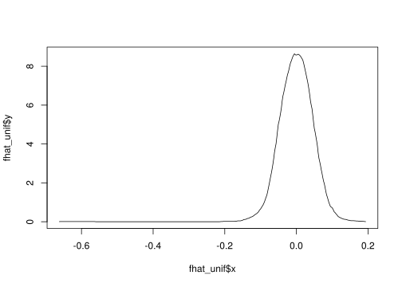
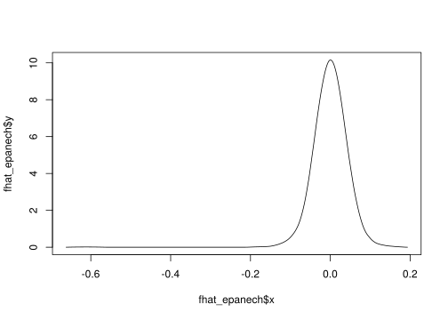
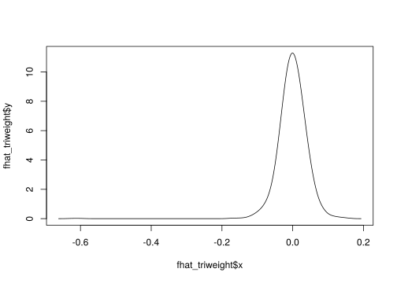
2.5.2 Efecto del ancho de banda en la estimación
** Kernel uniforme **
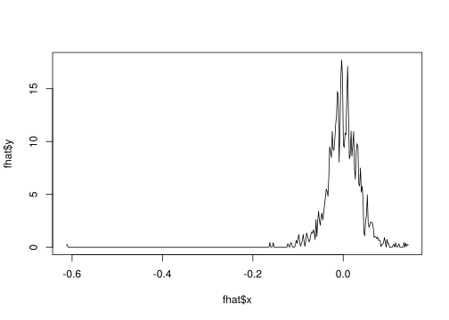
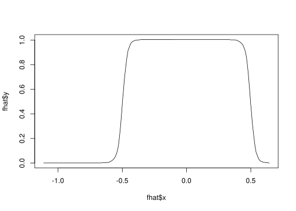
** Kernel Epanechnikov **
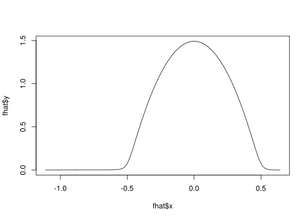
suppressMessages(library(tidyverse))
library(gganimate)
fani <- tibble()
for (b in seq(0.001, 0.02, length.out = 40)) {
f <- bkde(x, kernel = "epa", bandwidth = b, gridsize = length(x))
fani <- fani %>% bind_rows(tibble(xreal = sort(x),
x = f$x, y = f$y, bw = b))
}
ggplot(data = fani) + geom_line(aes(x, y), color = "blue") +
labs(title = paste0("Ancho de banda = {closest_state}")) +
transition_states(bw) + view_follow() + theme_minimal(base_size = 20)## Error in device(files[i], ...): unused arguments (units = "in", res = 192) Nota:
- Construya una variable llamada u que sea una secuencia de -0.15 a 0.15 con un paso de 0.01
- Asigne x a los datos stockrel y calcule su media y varianza.
- Usando la función dnorm construya los valores de la distribución de los datos usando la media y varianza calculada anteriormente. Asigne a esta variable f\_param.
- Defina un ancho de banda h en 0.02
- Construya un histograma para estos datos con ancho de banda h. Llame a esta variable f\_hist
- Usando el paquete KernSmooth y la función bkde, construya una función que calcule el estimador no paramétrico con un núcleo Epanechivok para un ancho de banda \(h\). Llame a esta variable f\_epa.
- Dibuje en el mismo gráfico la estimación paramétrica y no paramétrica.
x <- read.csv("data/stockres.txt")
x <- unlist(x)
# Eliminar nombres de las columnas
names(x) <- NULL
u <- seq(-0.15, 0.15, by = 0.01)
mu <- mean(x)
sigma <- sd(x)
f_param <- dnorm(u, mean = mu, sd = sigma)
h <- 0.02
n_bins <- floor(diff(range(x))/h)
f_hist <- hist(x, breaks = n_bins)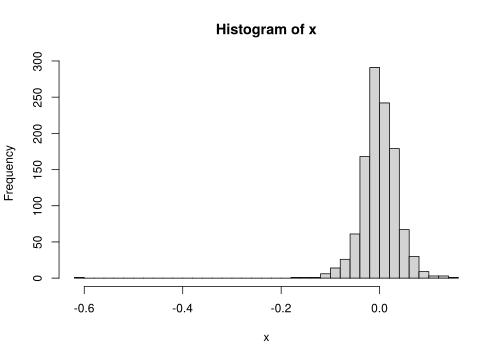
f_epa <- as.data.frame(bkde(x, kernel = "epa", bandwidth = h))
x_df <- data.frame(x)
library(ggplot2)
ggplot(x_df, aes(x)) + geom_histogram(aes(y = ..density..),
binwidth = 0.02, col = "black", fill = "white") +
stat_function(fun = dnorm, args = list(mean = mu,
sd = sigma), color = "red") + geom_line(data = f_epa,
aes(x, y), color = "blue") + theme_minimal(base_size = 20)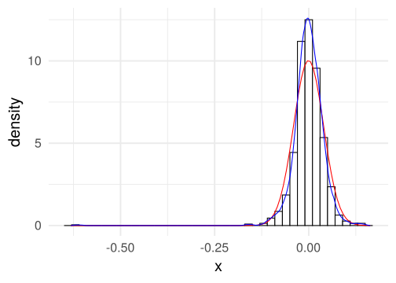
2.5.3 Ancho de banda óptimo
Usemos la regla de la normal o también conocida como Silverman. Primero recuerde que en este caso se asume que \(f(x)\) sigue una distribución normal. En este caso, lo que se obtiene es que
\[\begin{align*} \Vert f^{\prime \prime} \Vert_2^2 & = \sigma ^{-5} \int \{\phi^{\prime \prime}\}^2 dx \\ & = \sigma ^{-5} \frac{3}{8\sqrt{\pi}} \approx 0.212 \sigma^{-5} \end{align*}\]
donde \(\phi\) es la densidad de una normal estándar.
El estimador para \(\sigma\) es
\[ s = \sqrt{\frac{1}{n-1} \sum_{i=1}^n (x_i - \bar{x})^2 }. \]
Y usando el cálculo realizado anteriormente, se obtiene que
\[ h_{normal} = \left( \frac{4 s^5}{3n} \right)^{1/5} \approx 1.06 s n^{-1/5}. \]
Un estimador más robusto es
\[ h_{normal} = 1.06 \min \left\{ s , \frac{IQR}{1.34} \right\} n^{-1/5}. \]
¿Por qué es \(IQR / 1.34\)?
h_normal <- 1.06 * s * n^(-1/5)
h <- h_normal
n_bins <- floor(diff(range(x))/h)
f_hist <- hist(x, breaks = n_bins, plot = FALSE)
f_epa <- as.data.frame(bkde(x, kernel = "epa", bandwidth = h))
ggplot(x_df, aes(x)) + geom_histogram(aes(y = ..density..),
binwidth = h, col = "black", fill = "white") +
stat_function(fun = dnorm, args = list(mean = mu,
sd = sigma), color = "red") + geom_line(data = f_epa,
aes(x, y), color = "blue") + theme_minimal(base_size = 20)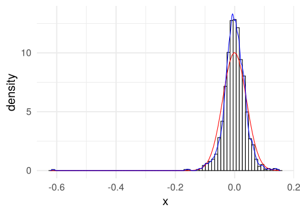
h_iqr <- 1.06 * min(s, IQR(x)/1.34) * n^(-1/5)
h <- h_iqr
n_bins <- floor(diff(range(x))/h)
f_hist <- hist(x, breaks = n_bins, plot = FALSE)
f_epa <- as.data.frame(bkde(x, kernel = "epa", bandwidth = h))
ggplot(x_df, aes(x)) + geom_histogram(aes(y = ..density..),
binwidth = h, col = "black", fill = "white") +
stat_function(fun = dnorm, args = list(mean = mu,
sd = sigma), color = "red") + geom_line(data = f_epa,
aes(x, y), color = "blue") + theme_minimal(base_size = 20)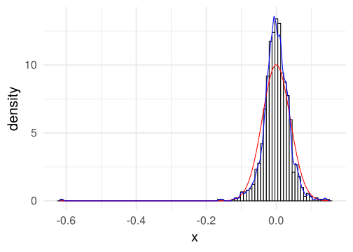
Una librería más especializada es (non-parametric).
library(np)
x.eval <- seq(-0.2, 0.2, length.out = 200)
h_normal_np <- npudensbw(dat = x, bwmethod = "normal-reference")
dens.ksum <- npksum(txdat = x, exdat = x.eval, bws = h_normal_np$bw)$ksum/(n *
h_normal_np$bw[1])
dens.ksum.df <- data.frame(x = x.eval, y = dens.ksum)
ggplot(x_df, aes(x)) + geom_histogram(aes(y = ..density..),
binwidth = h_normal_np$bw, col = "black", fill = "white") +
stat_function(fun = dnorm, args = list(mean = mu,
sd = sigma), color = "red") + geom_line(data = dens.ksum.df,
aes(x, y), color = "blue") + theme_minimal(base_size = 20)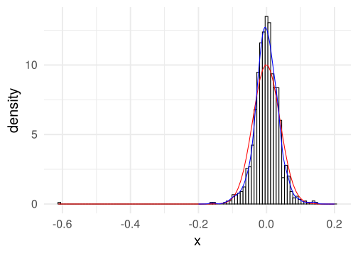
2.5.4 Validación cruzada
La forma que vimos en clase es la de validación cruzada por mínimos cuadrados``least-square cross validation’’ la cual se puede ejecutar con este comando.
##
Multistart 1 of 1 |
Multistart 1 of 1 |
Multistart 1 of 1 |
Multistart 1 of 1 /
Multistart 1 of 1 |
Multistart 1 of 1 |
dens.np.df <- data.frame(x = dens.np$eval[, 1], y = dens.np$dens)
ggplot(x_df, aes(x)) + geom_histogram(aes(y = ..density..),
binwidth = h_cv_np_ls$bw, col = "black", fill = "white") +
stat_function(fun = dnorm, args = list(mean = mu,
sd = sigma), color = "red") + geom_line(data = dens.np.df,
aes(x, y), color = "blue") + theme_minimal(base_size = 20)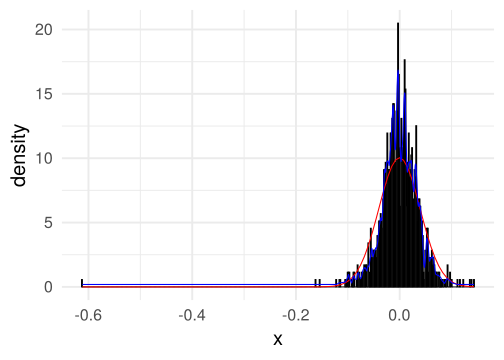
2.5.5 Temas adicionales
** Reducción del sesgo ** Como lo mencionamos en el texto, una forma de mejorar el sesgo en la estimación es suponer que la función de densidad es más veces diferenciable.
Esto se logra asumiendo que el Kernel es más veces diferenciable.
##
Multistart 1 of 1 |
Multistart 1 of 1 |
Multistart 1 of 1 |
Multistart 1 of 1 /
Multistart 1 of 1 |
Multistart 1 of 1 |
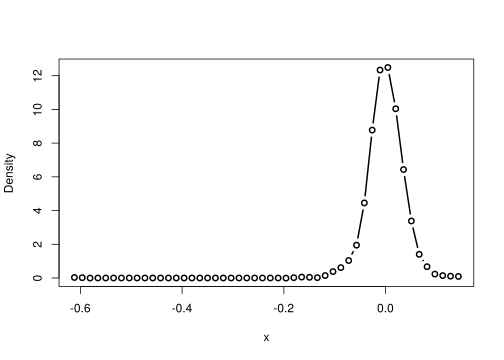
dens.np.df <- data.frame(x = dens.np$eval[, 1], y = dens.np$dens)
ggplot(x_df, aes(x)) + geom_histogram(aes(y = ..density..),
binwidth = h_cv_np_ls$bw, col = "black", fill = "white") +
stat_function(fun = dnorm, args = list(mean = mu,
sd = sigma), color = "red") + geom_line(data = dens.np.df,
aes(x, y), color = "blue") + theme_minimal(base_size = 20)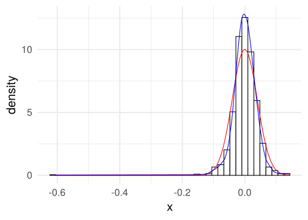
Otra forma de estimar el ancho de banda Otra forma de estimar ancho de bandas óptimos es usando máxima verosimilitud. Les dejo de tarea revisar la sección 1.1 del artículo de (Hall 1987) para entender su estructura.
##
Multistart 1 of 1 |
Multistart 1 of 1 |
Multistart 1 of 1 |
Multistart 1 of 1 /
Multistart 1 of 1 |
Multistart 1 of 1 |
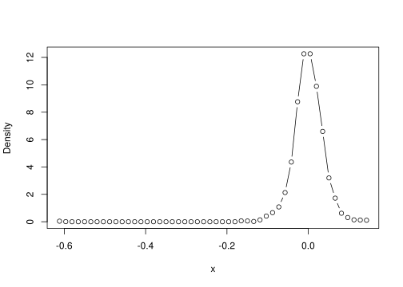
dens.np.df <- data.frame(x = dens.np$eval[, 1], y = dens.np$dens)
ggplot(x_df, aes(x)) + geom_histogram(aes(y = ..density..),
binwidth = h_cv_np_ml$bw, col = "black", fill = "white") +
stat_function(fun = dnorm, args = list(mean = mu,
sd = sigma), color = "red") + geom_line(data = dens.np.df,
aes(x, y), color = "blue") + theme_minimal(base_size = 20)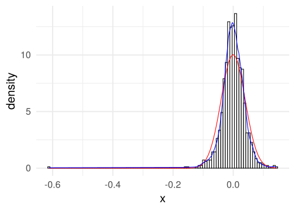
##
Multistart 1 of 1 |
Multistart 1 of 1 |
Multistart 1 of 1 |
Multistart 1 of 1 /
Multistart 1 of 1 |
Multistart 1 of 1 |
dens.np.df <- data.frame(x = dens.np$eval[, 1], y = dens.np$dens)
ggplot(x_df, aes(x)) + geom_histogram(aes(y = ..density..),
binwidth = h_cv_np_ml$bw, col = "black", fill = "white") +
stat_function(fun = dnorm, args = list(mean = mu,
sd = sigma), color = "red") + geom_line(data = dens.np.df,
aes(x, y), color = "blue") + theme_minimal(base_size = 20)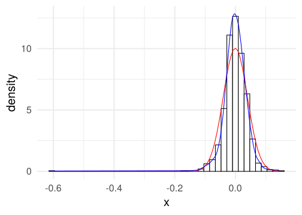
fani <- tibble()
for (b in seq(0.001, 0.05, length.out = 40)) {
f <- npudens(tdat = x, ckertype = "epanechnikov",
bandwidth.compute = FALSE, bws = b)
fani <- fani %>% bind_rows(tibble(xreal = sort(x),
x = f$eval$x, y = f$dens, bw = b))
}
ggplot(data = fani) + geom_line(aes(x, y), color = "blue") +
labs(title = paste0("Ancho de banda = {closest_state}")) +
theme_minimal(base_size = 20) + transition_states(bw) +
view_follow()## Error in device(files[i], ...): unused arguments (units = "in", res = 192)Ejercicio 2.5 Implementar el intervalo confianza visto en clase para estimadores de densidades por núcleos y visualizarlo de en ggplot.
Si se atreven: ¿Se podría hacer una versión animada de ese gráfico para visualizar el significado real de este el intervalo de confianza?2.6 Ejercicios
Del libro de (Härdle et al. 2004) hagan los siguientes ejercicios
- Sección 2: 1, 2, 3, 5, 7, 14
- Sección 3: 4, 8, 10, 11, 16,
References
Hall, Peter. 1987. “On Kullback-Leibler Loss and Density Estimation.” The Annals of Statistics 15 (4): 1491–1519. https://doi.org/10.1214/aos/1176350606.
Härdle, Wolfgang, Axel Werwatz, Marlene Müller, and Stefan Sperlich. 2004. Nonparametric and Semiparametric Models. Springer Series in Statistics. Berlin, Heidelberg: Springer Berlin Heidelberg. https://doi.org/10.1007/978-3-642-17146-8.